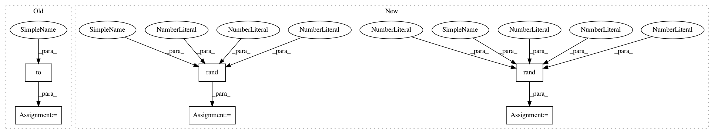

a828315185a9dc8b21ec8e5dbead9044caf0d3a2,test/geometry/warp/test_homography_warper.py,TestHomographyWarper,test_gradcheck,#TestHomographyWarper#Any#Any#,203
Before Change
eye_size = 3 // identity 3x3
// create checkerboard
patch_src = torch.rand(batch_shape).to(device)
patch_src = utils.tensor_to_gradcheck_var(patch_src) // to var
// create base homography
batch_size, _, height, width = patch_src.shape
dst_homo_src = utils.create_eye_batch(batch_size, eye_size).to(device)
dst_homo_src = utils.tensor_to_gradcheck_var(
dst_homo_src, requires_grad=False) // to var
After Change
assert_allclose(output, expected.to(device=device, dtype=dtype), atol=1e-4, rtol=1e-4)
@pytest.mark.parametrize("height", [1, 2, 5])
@pytest.mark.parametrize("width", [1, 2, 5])
def test_divide_by_zero2d(self, height, width, device, dtype):
output = kornia.normal_transform_pixel(height, width, device=device, dtype=dtype)
assert torch.isinf(output).sum().item() == 0
def test_transform2d_apply(self, device, dtype):
In pattern: SUPERPATTERN
Frequency: 3
Non-data size: 6
Instances
Project Name: arraiy/torchgeometry
Commit Name: a828315185a9dc8b21ec8e5dbead9044caf0d3a2
Time: 2020-12-22
Author: sj8716643@126.com
File Name: test/geometry/warp/test_homography_warper.py
Class Name: TestHomographyWarper
Method Name: test_gradcheck
Project Name: arraiy/torchgeometry
Commit Name: a828315185a9dc8b21ec8e5dbead9044caf0d3a2
Time: 2020-12-22
Author: sj8716643@126.com
File Name: test/geometry/test_linalg.py
Class Name: TestComposeTransforms
Method Name: test_gradcheck
Project Name: arraiy/torchgeometry
Commit Name: a828315185a9dc8b21ec8e5dbead9044caf0d3a2
Time: 2020-12-22
Author: sj8716643@126.com
File Name: test/geometry/warp/test_homography_warper.py
Class Name: TestHomographyWarper
Method Name: test_gradcheck
Project Name: arraiy/torchgeometry
Commit Name: a828315185a9dc8b21ec8e5dbead9044caf0d3a2
Time: 2020-12-22
Author: sj8716643@126.com
File Name: test/geometry/test_linalg.py
Class Name: TestRelativeTransformation
Method Name: test_gradcheck